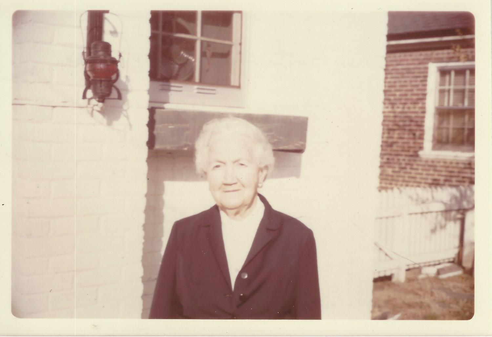
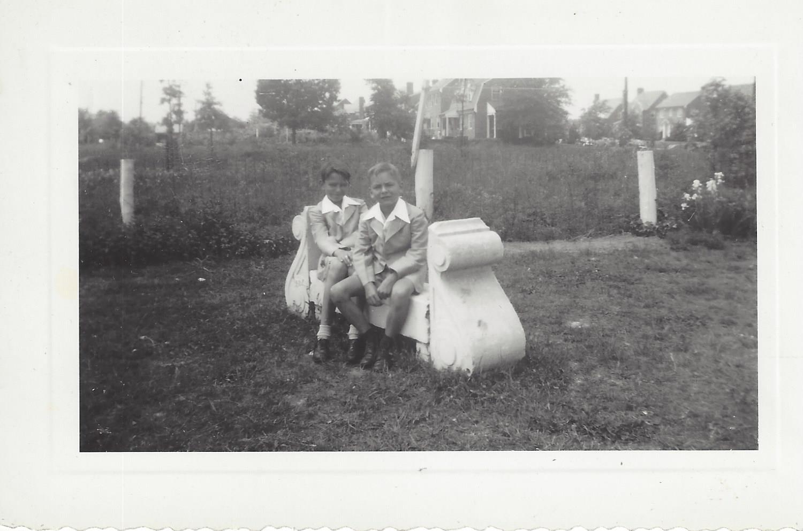

Roger Hickman • 1813–1889
RH
Roger Hickman
20 Jul 1813 – 14 Feb 1889
Back Creek, Bath Co., VA
♥ Marriage 1 — m. 11 Jan 1838
ML
Martha Ann Lockridge
1816 – 1843
d/o Col. Lanty Lockridge
LW
Lanty William
1838–1906
CSA Cavalry
ML
Mary Elizabeth
"Lizzie"
1840–1909
HE
Harriet Ellen
1842–1843
died in infancy
♥ Marriage 2 — m. 12 Mar 1846
MC
Margaret Brown Campbell
1824 – 1862
ME
Martha Ellen
1847–1861
died young
VA
Virginia Alice
"Jennie"
1848–1933
TB
Thomas Brown
1849–1928
JE
James Elliot
1851–~1862
ES
Emma Susan Sabina
1852–1919
MM
Matilda Margaret
"Tillie"
1854–1935
LE
Laura Eugenia
1856–1888
♥ Marriage 3 — m. 3 Nov 1864
RL
Rebecca Ann Lowry
1835 – 1896
d/o William & Mary Lowry
PL
Peter Lightner
1858–1937
★ direct line
AJ
Andrew Johnson
1861–1862
died in infancy
EA
Ella Anne
b. 1865
MF
Minnie Francis
1867–1867
died in infancy
HH
Hezikiah Houston
1868–1868
died in infancy
RS
Robert Sidney
~1872–1954
LG
Lula Georgia
1874–1943
GR
George Roger
1880–1912
Peter Lightner Hickman & Ollie Gertrude Lockridge

Peter Lightner Hickman
23 Feb 1858 – 20 Apr 1937
Back Creek, Bath Co., VA
"Sunrise" family home
"Sunrise" family home
♥
m. 18 Sep 1895

Ollie Gertrude Lockridge
4 Jun 1870 – 14 Aug 1965
from Ohio

Roger Lockridge
"Roge"
1896–1979
moved to Arkansas
NS
Nellie Christine Shaw
1907–1978
m. 1 Apr 1930
AM
Anne Maudine
b. 1938
m. Heinrich Luecke
FE
Forrest Elwood
"Si"
1898–1954
unmarried; Elkton, VA

Ollie Virginia
"Virge"
1902–1996
WC
Warren "Doc" Campbell
1893–1974
m. 19 Sep 1927

Clare Brown
1905–1997
Staunton, VA
family historian
family historian
JR
Juanita Elizabeth Rohr
b. 1909
m. 26 Aug 1935
CH
Carolyn Brown
b. 1937
m. Gilbert Bowman
KH
Kathleen James
"Jimmie"
b. 1939
m. Charles Edwards
PH
Penelope Ruth
b. 1943

Ruth Gertrude
1908–1997
DAR #624441
HG
Hermann Wm. Gabriel Jr.
1910–1972
m. 8 Apr 1933, Richmond
BG
Herman Wm. "Bill" Gabriel III
b. 1933
unmarried; UT/WY/AK/MT
family historian
family historian
HG
Henmar Ruskin
"Gabe"
b. 1936
m. Jo Ann Overby

Julian Kenneth
1911–1964
lawyer/politician
Harrisonburg, VA
Harrisonburg, VA
NM
Neva Lee Martin
"Bubbo"
b. 1910
m. 6 Sep 1937
NM
Neva Martin
b. 1939
m. (1) Thomas Mudd
m. (2) Stanley Strong
m. (2) Stanley Strong
PH
Julian Kenneth "Pete" II
b. 1945
m. (1) Ruth Bennett
m. (2) Patti Glenn
m. (2) Patti Glenn

Harry Herman
1914–1999
moved to Tennessee
VJ
Virginia Jefferson
1912–1998
m. 8 Mar 1948
DC
Dianne Courtney
b. 1942
m. Charles Mason
RH
Ralph Herman
b. 1954
Memphis, TN
Grandchildren & Great-Grandchildren of Peter Lightner Hickman
Roger "Roge" Hickman & Nellie Shaw
AM
Anne Maudine Hickman
b. 21 Dec 1938
HL
Heinrich Luecke
1934–2010
Texas
m. 2 Mar 1963
KL
Karl Heinrich Luecke
b. 4 Jan 1964
Clare Hickman & Juanita Rohr
CB
Carolyn Brown Hickman
b. 13 Oct 1937
Richmond, VA
GB
Gilbert Paris Bowman Jr.
b. 1936
m. 17 Jun 1961
LB
Lance Bond Bowman
b. 9 Jul 1966
DB
Derek Scott Bowman
b. 12 Mar 1970
KH
Kathleen "Jimmie" Hickman
b. 27 Oct 1939
CE
Charles Earle Edwards
m. 16 Apr 1966
AE
Ashley Hickman Edwards
b. 21 Jul 1975
PR
Penelope Ruth Hickman
b. 1 Sep 1943
Ruth Hickman & Hermann Gabriel — The Gabriel Line

Herman William "Bill" Gabriel III
b. 21 Dec 1933
Unmarried
UT, WY, AK, MT
family historian
wrote "Memories of a Career"
UT, WY, AK, MT
family historian
wrote "Memories of a Career"
HG
Henmar Ruskin "Gabe" Gabriel
b. 31 Jan 1936
military career
JO
Jo Ann Overby
b. 1940
m. 10 Jun 1961, Fort Lee, VA
BG
William Carl "Bill" Gabriel
b. 12 Mar 1962
AN
Anne Siobhan Nordquist
b. 1964
DR
Danielle Rene
b. 1982
BM
Brendan Michael
b. 1986
AN
Ashley Nicole
b. 1988
JM
Josephine Monet
b. 1993
PG
Paul Henmar Gabriel
b. 2 Sep 1965
KA
Kimberly Dee Anderson
b. 1967
HK
Hulton Kenna
b. 1997
Julian Kenneth Hickman & Neva Lee Martin — The JKH Line
NM
Neva Martin Hickman
b. 3 Aug 1939
TM
Thomas Mudd
b. 1940
m. 29 Oct 1960
VS
Victoria Scott Mudd
b. 1961
KC
Kit Charbonneau
b. 1957
MI
Marc Ian
b. 1988
SE
Sarah Elizabeth
b. 1990
CD
Cammy DeSalle Mudd
b. 1965
RL
Raymond Louth
b. 1966
CT
Catherine Taylor
b. 1994
ME
Michael Ethan
b. 1996
SM
Sarah MacKenzie
b. 1999
ET
Emily Thomas Mudd
b. 1970
BF
Brent Ferrell
AM
Adell Martin
b. 1993
NL
Nadia Lee
b. 1999
PH
Julian Kenneth "Pete" Hickman II
b. 1945
near Staunton, VA
PG
Jean "Patti" Glenn
b. 1947
m. 13 Oct 1973
AH
Amy Bethe Hickman
b. 1967
m. Michel Cathey
PL
Peter Lightner Hickman II
b. 19 Aug 1977
EA
Evelyn Abbott
m. 28 Dec 2004
SO
Sara Ollie
b. 2011
HC
Hanna Claire
b. 2013
IB
Ian Berkley Hickman
b. 8 Feb 1980
BC
Brendan Carlyle Hickman
b. 13 Dec 1981
Harry Herman Hickman & Virginia Jefferson
DC
Dianne Courtney Hickman
b. 6 Dec 1942
CM
Charles Mason
b. 1946
m. 14 Aug 1971
RH
Ralph Herman Hickman
b. 1954
Memphis, TN
NC
Lanora "Nora" Covington
b. 1958
m. Jul 1996
JP
Jeffrey Philip Hickman
b. 21 Apr 1989